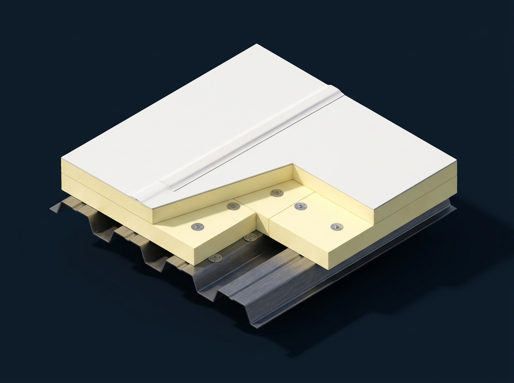

Flat Roofing in Bridgewater, NJ
Engineered flat and low-slope roofing solutions for residential additions, modern homes, sunrooms, garages, and commercial properties throughout Somerset County. Factory-certified installations of heat-welded TPO, vulcanized EPDM rubber, tapered polyiso drainage crickets, and fluid-applied silicone restorations. Built to eliminate ponding water permanently and backed by warranties up to 30 years.

Engineered Flat Roofing for Bridgewater Homes & Facilities
Roofs with pitches under 2:12 cannot shed water using overlapping shingles. Applying asphalt shingles to low-slope residential sunrooms, porch extensions, or commercial flat decks inevitably leads to moisture siphoning under tabs and rot.
Flat and low-slope architecture requires a continuous, monolithic waterproof membrane. At Bridgewater Roofer, we install premier single-ply thermoplastic polyolefin (TPO) and ethylene propylene diene terpolymer (EPDM) synthetic rubber systems. Our automated hot-air welding robots fuse seams together at 1,000°F, creating a chemical molecular bond 400% stronger than standard glued adhesives.
We eliminate ponding water by installing custom-designed tapered polyisocyanurate insulation crickets that actively funnel rainfall toward scuppers, internal drain sumps, or heavy-gauge perimeter drip edges. Whether you have a 400 sq ft residential sunroom addition or a 40,000 sq ft commercial warehouse, our installations deliver guaranteed leak-free protection.

8 Flat Roofing Problems We Diagnose & Eliminate
Flat roofs face unique hydraulic pressures. Here are the common failures our engineered systems permanently resolve:
Ponding Water Lasting Beyond 48 Hours
Standing water accelerates membrane UV breakdown, breaks down taped seams, and adds dangerous dead weight to structural rafters.
Open Adhesive Lap Seams & Fishmouths
Glued or taped rubber seams dry out over time. Freeze-thaw cycles pull them apart, allowing water into underlying insulation boards.
Shingle Failure on Low-Slope Additions
Asphalt shingles installed on slopes under 2:12 lack the pitch to shed water, causing chronic leaks under sunrooms and garage extensions.
Membrane Punctures & Mechanical Tears
Fallen oak branches, dropped tools, and heavy rooftop foot traffic puncture unreinforced membranes, creating hidden saturation paths.
Parapet Wall & Coping Metal Breaches
Unsealed coping caps and loose termination bars allow wind-driven rain behind vertical membrane turn-ups, rotting building walls.
Vapor Blisters & Entrapped Moisture
Trapped moisture beneath impermeable plies expands in summer heat, creating huge blisters that rupture and leak during thunderstorms.
HVAC Curb & Pitch Pocket Leaks
Rooftop AC vibrations crack pourable sealants around mechanical curbs and electrical conduits, directing water into interior rooms.
Membrane Shrinkage & Bridging
Decades of thermal shock cause unreinforced rubber to shrink and pull away from corner angle changes, tearing at edge terminations.
Flat Roofing System Layer Architecture
An engineered low-slope roof is a multi-tier protective barrier. Click target nodes on our 3D model below to inspect critical components:

Single-Ply TPO & EPDM Membrane Systems
White reflective TPO and vulcanized EPDM rubber provide 100% monolithic waterproof barriers for low-slope roofs. Heat-welded seams create molecular bonds far stronger than the membrane itself, ensuring permanent resistance to standing ponding water.
8 Warning Signs Your Flat Roof Demands Attention
Catching flat roof vulnerabilities early prevents expensive structural drywall leaks and rotted wooden framing:
Standing Water Beyond 48 Hours
Persistent ponding indicates inadequate slope, compressed insulation, or clogged internal drain bowls that need tapered crickets.
Sunroom or Addition Ceiling Stains
Water stains on ceilings directly beneath low-slope home additions indicate failing seams or shingles installed below code pitch.
Separating Lap Seams & Fishmouths
Curling or open voids along membrane overlap seams allow driving rain to siphon directly beneath the waterproof membrane.
Soft, Spongy Sensation Underfoot
Walking the roof reveals soft, flexing spots where trapped moisture has saturated insulation boards or rotted wooden decking.
Large Bubbles & Vapor Blisters
Gas blisters forming beneath the membrane indicate trapped moisture vaporizing in summer heat and stretching the rubber.
Loose Parapet Termination Bars
Gaps between the termination bar and masonry walls allow driving rain behind the membrane, flooding wall cavities.
Deteriorated Edge Drip Metal
Rusted, loose, or pulling gravel stop edge metal allows wind uplift to catch and peel the membrane during severe storms.
Rising Summer Air Conditioning Bills
Dark, saturated flat roof insulation loses thermal resistance, transferring immense solar heat into living or working spaces below.
Engineered for Bridgewater Neighborhoods & Commercial Hubs
Bridgewater Township features thousands of low-slope roof applications. In suburban developments throughout Green Knoll, Country Club Road, and Bradley Gardens, homeowners frequently have single-story sunroom additions, covered porches, and attached flat-roof garages. Along Route 22, Route 202/206, and I-287, commercial strip plazas and office buildings utilize sprawling flat roofs.
Central New Jersey's weather is particularly unforgiving to flat roofs. Heavy winter snowpacks linger on flat surfaces, creating intense freeze-thaw cycles that test every seam. In summer, 95°F temperatures and high humidity cause rapid thermal expansion in building decks.
Our flat roofing installations incorporate tapered polyisocyanurate insulation crickets to ensure positive drainage toward internal drains or exterior scuppers. We handle all Bridgewater Township building permits and code filings directly with the municipal code office at 505 Route 202/206, ensuring 100% compliance with New Jersey Uniform Construction Code.
Our 8-Step Flat Roofing Protocol
Every flat roof project follows our engineered quality protocol to guarantee zero ponding water and lifelong weather defense:
Core Moisture & Slope Analysis
We calibrate core samples to inspect underlying insulation and use laser levels to map structural drainage slopes.
Substrate Tear-Off & Deck Inspection
We strip failed roof layers down to bare wooden or corrugated steel decking, replacing damaged sheathing and reinforcing nailers.
Vapor Retarder Installation
We install a continuous self-adhering vapor barrier directly onto the deck to stop interior humidity from condensing in insulation.
Tapered Polyiso R-30 Crickets
We lay multi-layer staggered polyisocyanurate insulation crickets designed to actively channel water toward drains and scuppers.
High-Tensile Membrane Fastening
We apply commercial-grade 60-mil or 80-mil TPO or EPDM membrane using low-rise bonding adhesive or induction plate fastening.
Robotic Hot-Air Seam Welding
Automated Leister hot-air robots fuse TPO lap seams at 1,000°F, creating a chemical molecular bond far stronger than glued seams.
Custom Parapet & Drip Edge Flashing
We install prefabricated pipe boots, solder drain bowls, and hem heavy-gauge metal termination bars and coping caps.
Flood Test & Warranty Delivery
We conduct rigorous vector seam probing and water testing, coordinate township sign-off, and deliver your multi-year warranty.
Full-Spectrum Flat Roofing Solutions
Custom systems engineered for residential extensions, commercial facilities, and modern flat roof designs:
TPO Roofing Systems
Thermoplastic polyolefin single-ply membranes offering industry-leading solar heat reflection, ozone resistance, and chemical defense.
TPO Details →EPDM Rubber Roofing
Heavy-duty 60-mil and 90-mil synthetic rubber membranes with over 50 years of proven durability in cold Northeastern winter climates.
EPDM Systems →Residential Sunroom & Addition Flat Roofs
Replacing failed shingles on low-slope home extensions with clean, watertight single-ply membranes that never leak.
Residential Flat Details →Commercial Flat Roof Replacement
Turnkey tear-offs and re-roofs for retail strip centers, medical offices, and warehouses with up to 30-year manufacturer NDL warranties.
Commercial Solutions →Tapered Insulation & Slope Retrofits
Custom slope-to-drain polyiso cricket systems engineered to eliminate standing ponding water on existing flat roofs.
Tapered Insulation →Fluid-Applied Silicone Roof Restorations
Seamless monolithic silicone coatings applied over aging, dry flat membranes, extending roof life by 15-20 years at half the cost.
Silicone Coatings →Flat Roof Leak Detection & Repair
Rapid emergency patch units, electronic vector leak tracking, and permanent heat-welded repairs for active flat leaks.
Leak Repair →Parapet Coping & Wall Termination
Custom-fabricated sheet metal coping caps, reglet counter-flashing, and industrial termination bars for watertight wall transitions.
Flashing Details →Flat & Low-Slope Roofing Systems We Engineer
Monolithic commercial-grade TPO, EPDM, and modified bitumen membranes engineered for residential additions, sunrooms, and commercial structures:
Architectural Asphalt Shingles
The gold standard for Somerset County residential roofs. Architectural dimensional shingles feature multi-layered fiberglass construction, excellent wind resistance up to 130 mph, and rich shadow lines that elevate suburban curb appeal.
- Tapered rigid polyiso insulation eliminating standing water and ponding areas
- Robotic hot-air welded TPO seams and factory-primed EPDM vulcanized splice tape
- Custom commercial aluminum termination bars, counter-flashing & scupper box drains

Choosing Between TPO, EPDM & Fluid Restoration
An objective engineering comparison to help you choose the right flat roofing technology:
Heat-Welded TPO Membrane
- ✔Hot-air welded seams 400% stronger than glued seams.
- ✔Reflective white surface cuts summer cooling bills by 20%+.
- ✔Exceptional resistance to ponding water and chemical erosion.
- ✔Lifespan: 22 to 30 years with manufacturer NDL warranties.
Vulcanized Synthetic Rubber
- ✔Over 50 years of proven performance in Northeastern climates.
- ✔Maintains flexibility down to -49°F for freeze-thaw defense.
- ✔Black surface absorbs solar heat to melt winter snow faster.
- ✔Lifespan: 25 to 35 years with superior puncture resistance.
Fluid-Applied Elastomeric Coating
- ✔Restores existing structurally sound flat roofs at 40-60% savings.
- ✔Creates a 100% seamless monolithic barrier with zero seams.
- ✔Zero tear-off waste and zero tenant operational interruption.
- ✔Extends roof life by 15-20 years; fully tax deductible year one.
8 Factors That Shape Flat Roofing Investment
Low-slope roofs involve specialized drainage and thermal dynamics. Here are the genuine technical cost drivers:
Membrane Mil Thickness (60 vs 80-mil)
Choosing heavy-duty 80-mil TPO or 90-mil EPDM increases puncture defense against foot traffic and qualifies for 25-30 year NDL warranties.
Tapered Polyiso Insulation Crickets
Designing custom tapered slope-to-drain insulation crickets to eliminate ponding water requires precision engineering and extra board volume.
Existing Layers (NJ 2-Layer Rule)
Under N.J.A.C. 5:23, a roof with two existing layers cannot receive a third overlay. A full tear-off down to the structural deck is mandatory.
Attachment: Adhered vs Mechanically Attached
Fully adhered systems utilize commercial bonding adhesives for seamless wind resistance and smoothness, while mechanical systems use plates.
Rooftop Penetration & Curb Density
Roofs with multiple HVAC units, exhaust fans, skylights, and plumbing vents require significantly more hand-welded flashing details.
Parapet Wall Height & Coping Metal
High parapet walls requiring full-height vertical membrane turn-ups and custom sheet-metal coping caps influence material and labor hours.
Internal Drain & Scupper Upgrades
Replacing deteriorated cast-iron drain bowls with new sumped clamping-ring drains or cutting through-wall scuppers and downspouts.
Bridgewater UCC Permitting Fees
Municipal permit filing fees with the Bridgewater Township Code Enforcement office based on calculated residential project valuation.
Bridgewater Flat Roofing Permitting & Code Compliance
Under the New Jersey Uniform Construction Code (UCC), complete flat roof replacements and overlays require building permits issued by Bridgewater Township Code Enforcement (located at 505 Route 202/206).
Commercial and residential flat re-roofs trigger New Jersey energy conservation code mandates requiring continuous R-30 insulation packages. Bridgewater Roofer prepares all engineering drawings, verifies thermal R-values, pays municipal fees, and coordinates official township inspections upon project completion.

Recent Flat Roofing Projects in Somerset County
Explore authentic low-slope transformations executed with precision engineering, on schedule, and within budget:
Sunroom Low-Slope Shingle-to-TPO Conversion
A previous contractor improperly installed asphalt shingles on a 1.5:12 pitch sunroom addition, causing chronic ceiling leaks. We tore off the shingles, replaced 4 rotted plywood sheets, and installed heat-welded white 60-mil TPO with custom headwall flashing.
18,000 Sq. Ft. Flat Re-Roof with Zero Ponding
Removed aging ballasted EPDM with chronic 3-inch ponding pools. Engineered a custom tapered polyiso cricket assembly and installed robotic heat-welded Carlisle TPO with new internal drain sumps.
Interactive Before & After Flat Roof Transformation
Drag the interactive slider handle to inspect our low-slope restoration process.
 Before (Deteriorated Ponding Roof)
Before (Deteriorated Ponding Roof)
 After (Reflective Monolithic TPO)
After (Reflective Monolithic TPO)
Why Somerset County Chooses Us for Flat Roofing
We deliver master-certified single-ply craftsmanship, custom tapered drainage, and reliable warranties:
Certified Master Applicators
Authorized commercial and residential master applicators for Carlisle SynTec, GAF, and Firestone, delivering up to 30-year NDL warranties.
Robotic Hot-Air Seam Welding
Automated Leister hot-air robots fuse TPO seams at 1,000°F, creating a chemical molecular bond far stronger than glued seams.
Tapered Slope-to-Drain Design
We eliminate ponding puddles by engineering custom polyiso insulation crickets that actively funnel rainwater toward drains.
Bridgewater UCC Permit Experts
Turnkey management of Somerset County and Bridgewater municipal building codes, engineering calculations, and mandatory inspections.
Energy Star Reflective White TPO
Cool roof technology reflects 87% of solar heat, significantly reducing summer attic temperatures and cooling electricity bills.
Zero Subcontractors
Every flat roof is installed by our own in-house factory-certified single-ply technicians who specialize exclusively in low-slope roofing.
What Property Owners Say About Our Flat Roofing
Read authentic feedback from Somerset County property owners who solved flat roof leaks and ponding with our specialized systems:
Related Roofing Services
Explore other specialized solutions delivered by our Somerset County roofing crews:


Flat Roofing Across Bridgewater & Somerset County
Our experienced flat and low-slope roofing crews provide repair, retrofits, and replacements across Bridgewater and neighboring Somerset County communities:
Bridgewater, NJ
Suburban colonials, complex valleys & flat roof TPO & EPDM membrane installations across all township neighborhoods
Somerville, NJ
Historic Victorian roofs, steep pitch & expert flat roof TPO & EPDM membrane installations near downtown Somerville
Raritan, NJ
Residential asphalt shingle & flat roofing flat roof TPO & EPDM membrane installations along the Raritan corridor
Martinsville, NJ
High-wind ridge shingles & heavily shaded woodland flat roof TPO & EPDM membrane installations
Bound Brook, NJ
River valley weatherization, flashing seals & prompt flat roof TPO & EPDM membrane installations
Basking Ridge, NJ
Designer architectural shingles, shake conversions & premier flat roof TPO & EPDM membrane installations
Warren, NJ
Custom steep-slope estates, copper valleys & specialized flat roof TPO & EPDM membrane installations
Bedminster, NJ
Equestrian country estates, standing seam metal & complete flat roof TPO & EPDM membrane installations
Branchburg, NJ
Contemporary ranches, wind damage mitigation & full-service flat roof TPO & EPDM membrane installations
Hillsborough, NJ
Expansive suburban developments, ridge vent alignments & high-speed flat roof TPO & EPDM membrane installations
Manville, NJ
Classic single-family bungalows, porch roofs & dependable flat roof TPO & EPDM membrane installations
Flat Roofing FAQs
Straightforward answers to questions property owners ask about flat and low-slope roofing in Bridgewater:
Why can't I install asphalt shingles on my flat roof or sunroom?
Asphalt shingles require gravity and a minimum pitch of 2:12 (or 4:12 under standard application) to shed water effectively. On slopes flatter than 2:12, water moves too slowly and surface tension causes water to siphon backward underneath shingle tabs, rotting wooden sheathing. Low-slope roofs legally and structurally require continuous monolithic membranes like TPO or EPDM.
Which membrane is better for Bridgewater: TPO or EPDM?
Both systems perform exceptionally when properly installed. TPO features hot-air welded seams that form a permanent molecular bond, and its reflective white surface cuts summer air conditioning costs significantly. EPDM is a durable synthetic rubber with a 50+ year proven track record that remains flexible down to -49°F, absorbing winter solar heat to melt snow faster. We recommend the right material based on your building's slope, foot traffic, and tree shade.
How do you eliminate ponding water on a flat roof?
We eliminate ponding by installing engineered tapered polyisocyanurate insulation crickets. These factory-tapered boards create an artificial slope (typically 1/4 inch per foot) that guides standing water away from center spans and toward internal drain sumps, perimeter scuppers, or gutter troughs.
How long does a commercial-grade flat roof last?
A properly installed 60-mil or 80-mil TPO or EPDM roof typically lasts 22 to 30+ years in Central New Jersey. With routine bi-annual maintenance (clearing drains, inspecting perimeter flashing), many EPDM rubber roofs exceed 35 years of service.
Can an aging flat roof be restored with a silicone coating?
Yes, provided the underlying insulation is not heavily waterlogged (less than 15% moisture). We conduct infrared thermal scans, replace any isolated wet insulation cores, and apply a high-solids elastomeric silicone coating. This creates a seamless waterproof barrier that extends roof life by 15 to 20 years at roughly half the cost of a full tear-off.
Does New Jersey Uniform Construction Code permit a roof overlay?
Under N.J.A.C. 5:23, a roof may have a maximum of two layers. If your flat roof currently has only one layer that is structurally sound and dry, an overlay system may be permitted. However, if two layers are already present or if insulation is water-damaged, a complete tear-off down to the structural deck is legally mandated.
How do you handle transitions where a flat roof meets a shingled roof?
Tie-in transitions between flat additions and steep shingled roofs are common leak points. We run the flat membrane a minimum of 24 to 36 inches up the sloped pitch beneath the shingles, install a high-temperature self-adhering ice shield barrier, and integrate heavy-gauge metal transition flashing to ensure water flowing off shingles cannot enter behind the membrane.
How often should a flat roof be inspected in New Jersey?
Flat roofs should be inspected twice a year: once in the spring to inspect freeze-thaw seam movement and clean drains, and once in late autumn before winter snowpacks accumulate. Prompt inspections should also follow any major tropical storm or severe nor'easter.
What insulation R-value is required on flat roofs in Bridgewater?
Under the 2021 International Energy Conservation Code (IECC) as adopted by New Jersey, commercial and residential complete flat roof replacements require continuous insulation achieving a minimum of R-30. We install staggered layers of high-density polyisocyanurate boards to satisfy this code requirement.
Does flat roof replacement require a building permit in Bridgewater?
Yes. Full flat roof replacements and overlays require building permits issued by Bridgewater Township Code Enforcement (505 Route 202/206). Minor localized repairs (patching small punctures or clearing drains) do not require permits. Bridgewater Roofer manages all permit paperwork and coordinates final township building inspections.
Helpful Flat Roofing Guides
Learn more about low-slope engineering, membrane comparisons, and maintenance:

TPO vs. EPDM: The Flat Roof Comparison
Detailed technical comparison of seam welding, UV reflectivity, lifespan, and lifecycle ROI in NJ.
Read Comparison Guide →
Flat Roof Repair vs. Replacement
Understand the 25% moisture rule, Section 179 tax deductions, and how to evaluate coatings vs tear-offs.
Read Decision Guide →
Navigating Bridgewater Roofing Permits & NJ UCC
A property owner's guide to local building codes, structural wind calculations, and permit inspections.
Read Permit Guide →Have a Flat Roof Leak or Replacement Project?
Speak directly with our specialized flat and low-slope roofing technicians. We diagnose chronic ponding, repair separating seams, and install monolithic TPO and EPDM membrane systems.